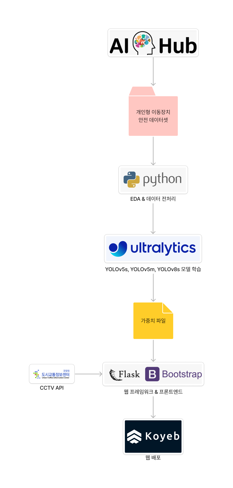

프로젝트 멈춰!
최근 몇 년간 개인형 이동장치의 사용량이 급격히 증가하면서, 도로에서 발생하는 교통사고의 주요 원인 중 하나인 개인형 이동장치의 위법 행위가 두드러지게 나타나고 있습니다.
그러나 현재까지의 적발 사례 수는 상대적으로 낮은 수준에 그치고 있습니다. 이는 위법 행위를 적발하는 인력의 한계와 감시 시스템의 제한성 등이 원인으로 지적 됩니다. 따라서 저희는 이러한 문제를 해결하고자 교통법규 위반을 탐지하는 프로젝트 멈춰!를 추진하게 되었습니다.
프로젝트의 주요 목표는 개인형 이동장치 중 오토바이에 초점을 두어 교통법규 위반 행위를 실시간으로 탐지하는 모델을 개발하는 것입니다. 이를 통해 사람의 제한된 감시 능력에 의지하는 것이 아닌 컴퓨터 비전과 인공지능 기술을 활용하여 위반 사례를 신속하고 정확하게 인식할 것으로 기대하고, 해당 프로젝트를 통해 교통사고로 이어지는 위반을 예방하는 것을 목적으로 합니다. 또한, 특정 지역의 위반 건수 확인을 자동화해서 단속 인력 배치에 도움이 되는 시스템을 개발하는 것이 최종 목표입니다.
팀원 소개
김동현 팀장: 웹 서비스 개발 및 배포
김영훈 팀원: 웹 프론트엔드 개발, 모델 성능 개선
김상현 팀원: 데이터 전처리, 모델 학습 진행 및 성능 개선
프로젝트 Flow Chart
